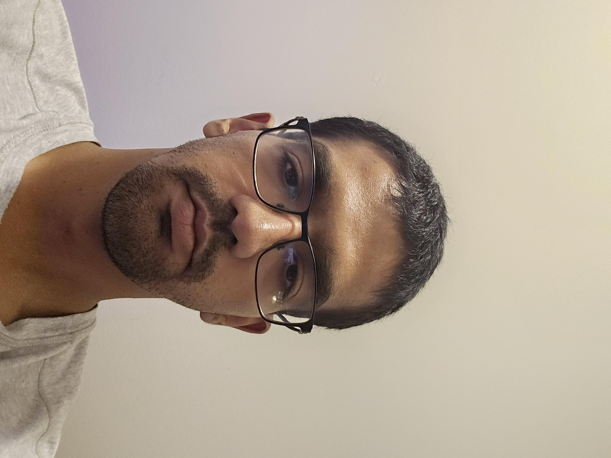

| Link to TAMU Statistics Website |  |
| My Bio: Hi, I'm Aditya and I'm currently a first-year student in the Statistical Data Science Masters programs at Texas A&M. Before this, I was at Rice University in Houston where I majored in Economics and Cognitive Sciences. |